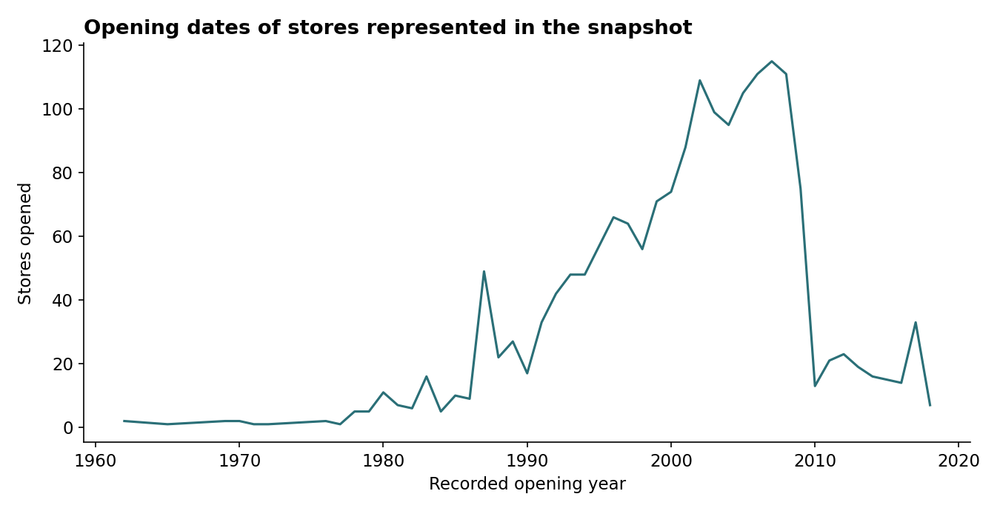

Target Store Expansion Analysis
Analyzes the store footprint, market concentration and recorded opening patterns. Includes reproducible chart extracts and clear decision limits.

Business question
How are stores distributed across markets, and what patterns appear in recorded opening dates?
Approach
Group stores by market, summarize recorded openings by year, and visualize geographic coverage. The refreshed notebook makes the original saved chart extracts reproducible and identifies their provenance.
What the analysis supports
Use footprint concentration and opening history to frame deeper expansion research. A market’s store count alone does not identify unmet demand or the best next location.

Historical opening records of stores represented in the snapshot.
Limits
This is store-location data, not sales transactions. It cannot establish product-category revenue, profitability or expansion ROI. The raw target.csv was not included in the original repository; the published chart extracts and locations are included, with that distinction documented. The collection date is unspecified, and the numbers are not current inventory claims.